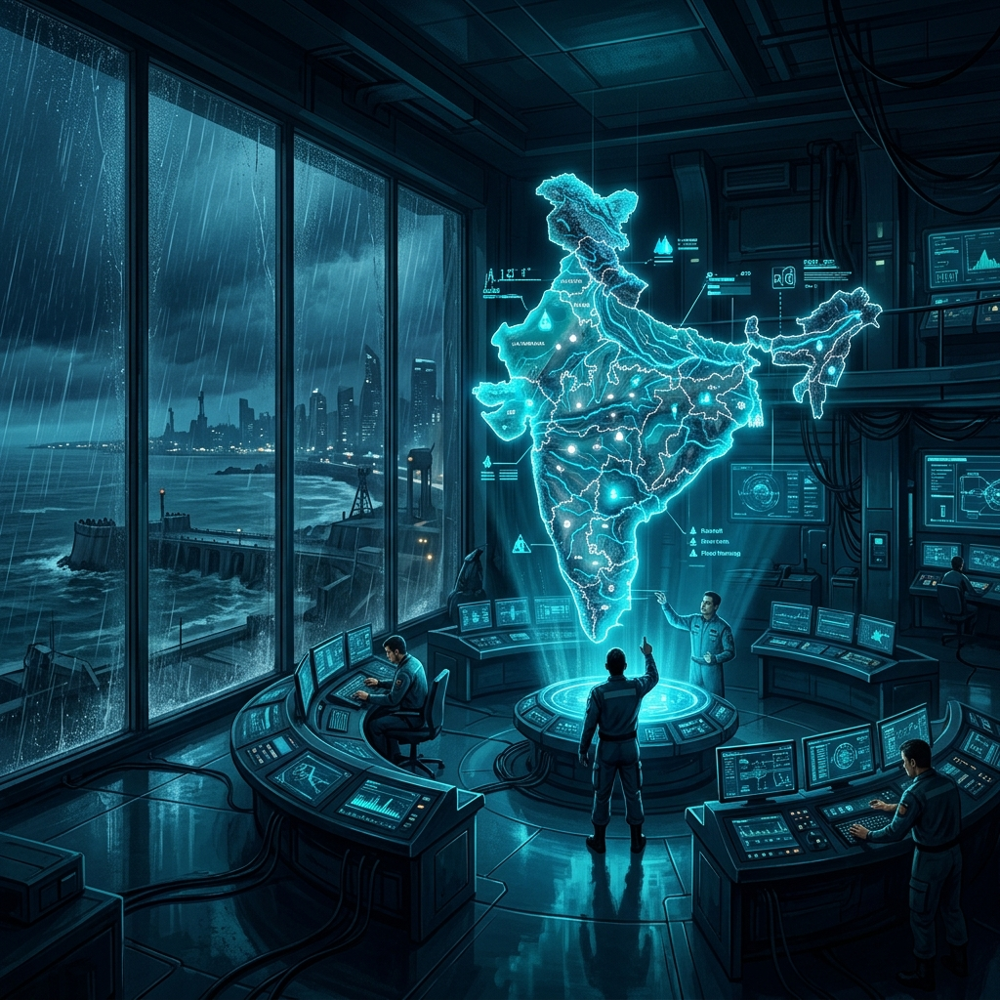

Monitor rainfall patterns, track river flows, and assess flood risk zones with live environmental data — helping communities prepare, respond, and recover.
India is one of the most flood-prone regions in the world. Over 40 million hectares — roughly 12% of the national territory — is considered high-risk. We track the three distinct types of flood hazards that threaten the nation.
Caused by rapid urbanization and inadequate drainage systems, leading to extreme waterlogging in cities like Mumbai, Chennai, and Delhi.
Learn MoreOccurs when river basins overflow due to prolonged monsoon activity, affecting millions in the Indo-Gangetic and Brahmaputra plains.
Learn MoreSudden surges triggered by cloudbursts or glacial breaches (GLOF events), common in the high-altitude regions of Uttrakhand and Sikkim.
Learn MoreAccording to the Central Water Commission (CWC), the annual average impact of floods in India is staggering.
FloodGuard India isn't just a dashboard; it's a diagnostic response ecosystem. By translating complex hydrological sensors into actionable alerts, we empower communities to prepare, respond, and recover effectively.
Meet the Team